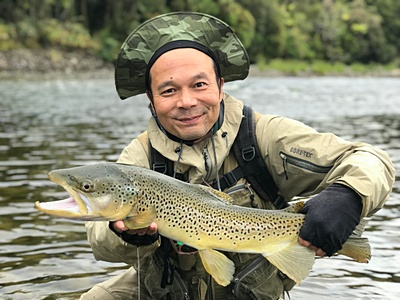

作者の自己紹介

氏 名 ： 伊藤 剛 いとう たけし
生年月日 ： 1962.05.14
出身地 ： 愛知県北設楽郡東栄町
釣りの略歴
○小学校入学前は近所の渓流でカワムツ、オイカワと戯れる。
○小学校四年生の春に、初めてアマゴを５尾釣る。その三日後、友達と釣りに行き、大アマゴを釣って以来、渓流釣りを覚える。
○高専一年生の春休みに父が買ってくれたダイワ製のルア―竿とスピニングリ―ルで、初めてアマゴをルア―で釣る。以来、渓流のルア―釣りに没頭する。
○高専五年生の時に、その頃テンカラを始めた兄の影響で、父の古いヘラ竿を改良し、自作のテンカラ竿を作る。初めて行ったホ―ムグラウンドの川では、十３尾のアマゴが毛針に出て、掛けたのは１尾だけ。以来、テンカラ釣りに夢中になる。
○1983年4月、奥只見の魚を育てる会のことを知り、向こうは魚影が濃そうだナと新潟県は長岡市の大学に入学、釣り同好会に在籍する。親元を離れたのを良いことに、春はルア―、初夏から秋はテンカラと、頻繁な釣行を繰り返す。
○1989年4月、社会人となり、財政に余力ができたことから学生時代には手が出なかったフライフィッシングを始め、現在に至る。主に中部地方の渓流に通う。
○1999年の5月、それまで10年勤めた会社を辞め、ニュ―ジ―ランドで自然環境、淡水の生態を学ぶためＮＺに渡る。語学学校のあったオ―クランド、そしてワイカト大学のあったハミルトンでの滞在中、現地でも釣行と愚行とを繰り返す。
○2002年暮れ、日本に帰り故郷の東栄町で暮らし始める。釣りはボチボチ、かたわらでラジコン飛行機に熱を上げる。
○2005年の５月より、兄、叔母たちの住む豊橋市で暮らし始める。釣りに行く頻度は減ったが、主にルアーフィッシングを叔父と共に山岳渓流で楽しむ。
○2010年の11月下旬、サイト開設当初からの熱心な読者の１人である鰐部さんと、名ガイドディーン・トロレイ君の案内で、念願のサウス・ウェストランド釣行を果たす。
2018年11月下旬より12月5日まで、単独釣行でNZ南島西海岸と北島ハミルトン近郊の川への釣行を果たす。ガイドはおなじみのディーン君にお願いした。
こんなふうに Fish & tips を作っています
釣りに行かない日曜日の昼間には、洗濯をしながらコラムやエッセイのネタを考えています。会社の昼休みにもアイデアを探しています。（笑）
釣行の後は、その日の出来事をトピック（マインドマップ）として書き出しておき、暇ができたときに思い出しながら釣行日誌をまとめています。こういうときにマインドマップは便利ですね。最近は、マインドマップを書くためのフリーソフト XMind を主に使用して、あらすじを書いております。あらすじが固まったら、 XMind からテキスト出力を行い、それをテキストエディターの Mery を使って開き、付属のマクロ機能で、必要なHTMLタグを付加して整形しています。HTMLファイルの編集は、ATOMという高機能エディターで行っています。（しかしこのエディターの機能のほとんどは使いこなせていません。が、格段に編集が楽になりました。） 最近は記事の体裁が固まったので、もっぱら軽量なエディター Mery にてHTMLの編集を行っています。
画像の加工は、主に FastStone Image Viewer というフリーソフトを使っています。日本語化パッチも公開されており、多機能な上に軽量なのでほとんどこれで作業するようになりました。少し複雑な加工には、こちらもフリーソフトの GIMP を使っています。
ウェブサイトの記事作成において気を付けていること
○なるべく多くの人に見てもらえるように、基本的なHTMLを用いる。
→ 難しいことはわからないし、できないので.....。2016年から、スマホ・タブレットにも対応したレスポンシブデザインのホームページになりました。Template-Partyさんのテンプレートを使わせていただいております。
○家庭用の小さなモニタ画面でも見やすいようにレイアウトする。
→ 自分で使っているモニタが小さいので.....
○一般回線でもストレス無く楽しめるよう、テキスト主体でデ―タを軽くする。
→ 画像の取り込みと処理が面倒なだけです..... でも、99年の5月にデジタルカメラを買ったので、画像の貼り込みがとても楽になりました。2015年現在では、回線も光になり、大きな画像もストレス無く表示できるようになりましたので、それほど気にしなくてもよくなりました。
○なるべく頻繁に更新する。
→ 春から秋は釣行で忙しく、冬の間は釣行できなくてネタが無いし....でも頑張ります。2015年現在、夏の釣行が年に二、三回程度となってしまい、更新が滞っております。申し訳ありません。
サイトマップ
ホームへ